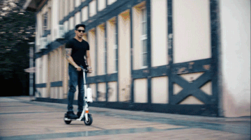
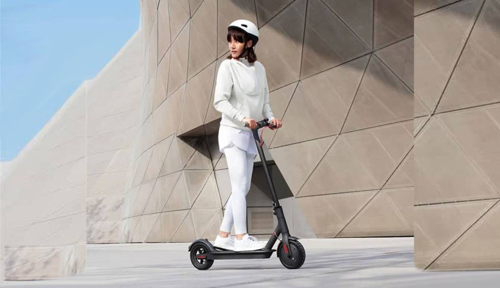
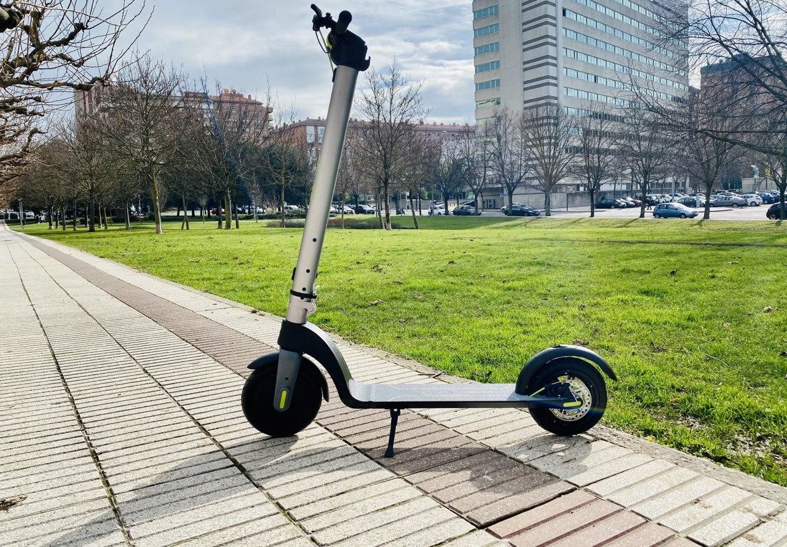
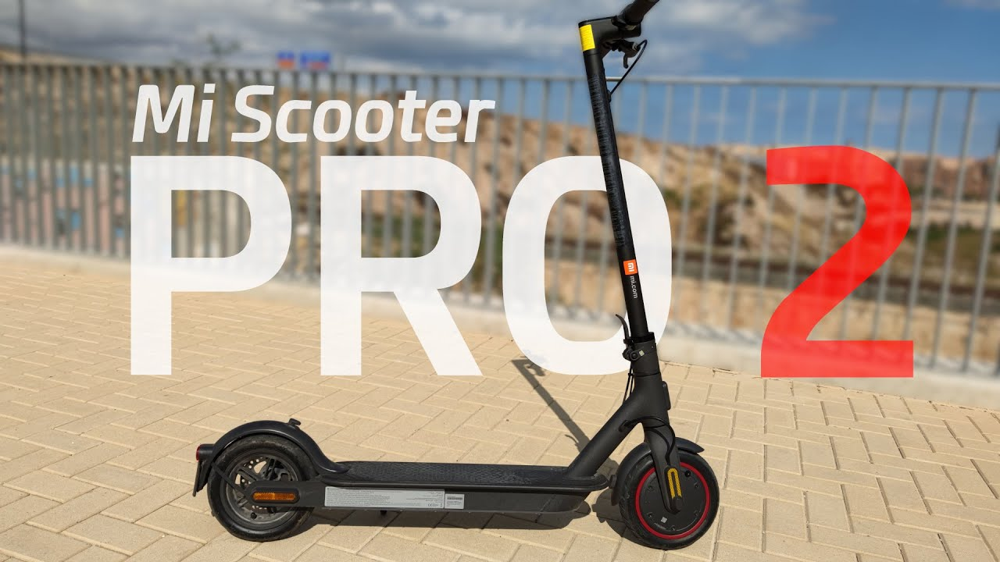
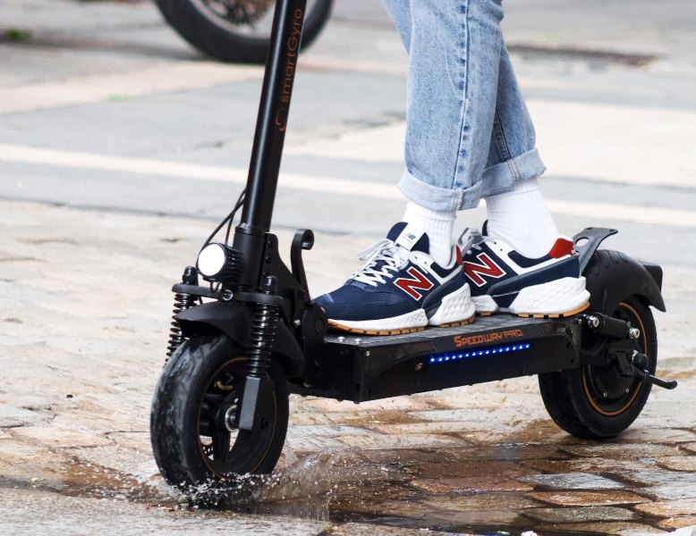

Un patinete electrico es un patinete autopropulsado por un motor electrico. El conductor suele ir de pie. La edad de utilizacion minima de este vehiculo debe ser de entre 14 o 16 anos segun la legislacion de cada pais. Los patinetes electricos a veces se conocen como patinetes electronicos.

VENTAJAS
El mercado de movilidad muestra en la actualidad una clara tendencia a la electrificacion, gracias a los bajos costes de la electricidad en comparacion con el combustible.
El principal beneficio de las motos electricas es el bajo coste de la electricidad, en comparacion con los motores de combustion.
Utilizar un motor electrico no solo cuida el medio ambiente, sino la propia salud de todas las personas.
Gracias a la popularidad actual en el mercado, es posible conseguir una gran diversidad de marcas y repuestos de motos electricas.
Las motos electricas pagan menos impuestos que otros tipos de vehiculos.
Gracias al avance de la tecnologia y a que las scooters electricas son vehiculos novedosos, la velocidad de carga se ha actualizado, siendo muy rapida y eficiente.
Otra ventaja destacada de este tipo de vehiculos es su facil forma de manejo.

LEYES LOCALES
Siempre es recomendable conocer bien cuales son las leyes y regulaciones sobre los patinetes en la ciudad donde te encuentres. Es necesario conseguir la informacion correcta, ya que las reglas pueden variar mucho de una ciudad a otra. Habra que poner especial atencion a las velocidades maximas, los lugares de estacionamiento y si se requiere licencia o no.
TIPOS DE SCOOTERS ELECTRICOS
Patinetes electricos para niños:
Este tipo de patinete electrico son un juguete que suele rondar los 120W o mas. Especificados especialmente para ninos y disenados con el peso y prestaciones adecuadas para diferentes edades, conviene fijarse en la edad recomendada de uso.
Scooter electrico gama baja: Los modelos incluidos en el segmento A. Son patinetes electricos ligeros que suelen pesar unos 8kg de peso y con ruedas de 5,5 pulgadas macizas. Nosotros en ocasiones tambien los denominamos gama basica. Son los mas livianos del mercado y tambien los mas economicos. Aunque existen modelos para adultos, son recomendados para trayectos cortos o para el uso por jovenes o ninos. Su autonomia real suele aproximarse a los 6-10 km dependiendo de diferentes variables.
Scooter electrico gama media: Este tipo de patinetes electricos tambien los solemos denominar como modelos de gama media. Suelen estar equipados como motores de 250W. Se caracterizan por ofrecer prestaciones superiores a los modelos del segmento A. Con ruedas mas grandes de 8" que pueden ser macizas o hinchables. Tambien pueden incluir suspension delantera o trasera, frenos de disco o tambor. Capaces de ofrecer una autonomia real de entre 18-22 km, pueden llegar a unos 25km/h de velocidad maxima real.
Scooter electrico gama alta: Este tipo de patinete electrico destaca por ofrecer grandes prestaciones para desplazarse por la ciudad o centros urbanos. Normalmente los compran usuarios que han tenido modelos inferiores anterioremente, pero que valoran mucho en su dia a dia este tipo de vehiculos por la practicidad que ofrecen .Fabricados con prestaciones que son capaces de facilitar el desplazamiento urbano de forma mas que solvente. Suelen ser algo mas pesados, ya que equipan motores electricos y baterias superiores. Asi como ruedas de mayor tamano.
LOS MEJORES SCOOTERS ELECTRICOS 2022
Cecotec Bongo Serie A Connected
El futuro de los patinetes electricos definitivamente esta en las baterias extraibles y Cecotec lo sabe, pues su modelo Bongo Serie A Connected cuenta con una que ademas de poder extraerla y recargarla en cualquier momento, esta comodamente puesta en el manillar.

Xiaomi Mi Electric Scooter Pro 2
El patinete Xiaomi Mi M365 Pro 2 es un scooter solido, de calidad y con buenos materiales. Su peso de 14,2 kg, sin ser el mas ligero de su categoria, lo hace muy comodo para transportar.

Smartgyro Xtreme Speedway Pro
SmartGyro Xtreme SpeedWay Pro es un patinete electrico plegable y muy potente, con una base grande para los pies, cuatro intermitentes Led seleccionables (dos delante y dos detras), que te ayudan a indicar tus giros

Xiaomi Mi Electric Scooter 3
A primera vista, parece un patinete robusto, compacto, y muy potente. Gracias a su motor de 600 W podras alcanzar hasta una velocidad de 25 km/h. De fabrica esta limitado para poder ser conducido por ciudad.